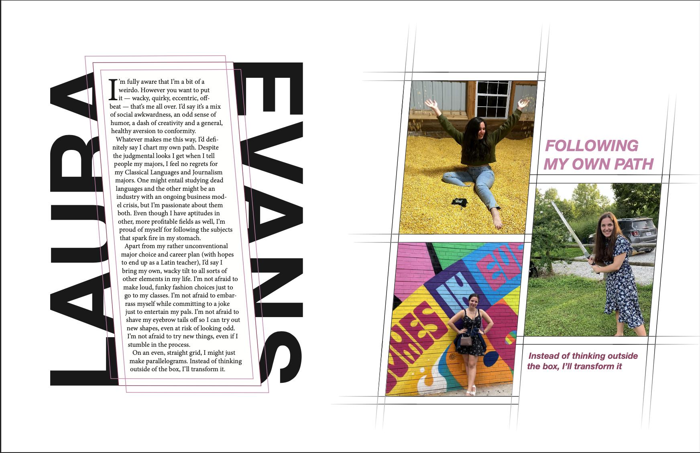
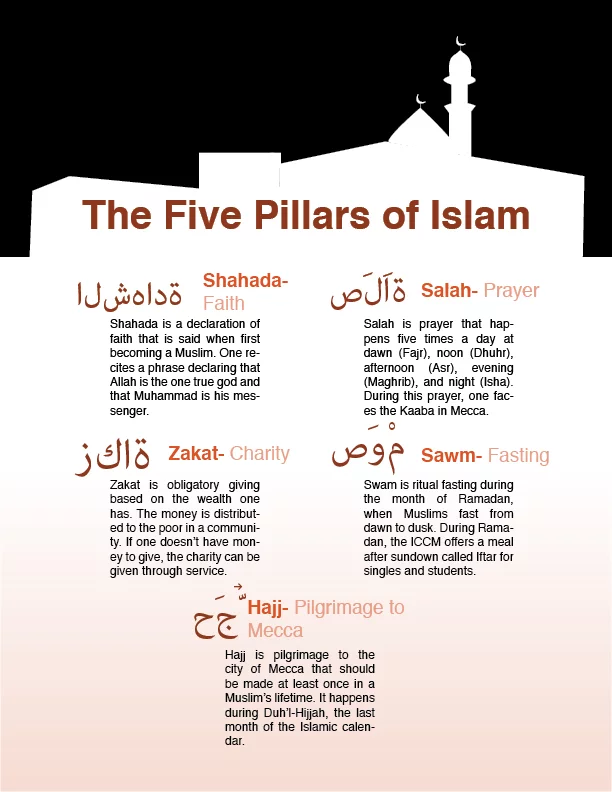

Multimedia work
Here is some of my multimedia work, showcasing photography, design and graphics skills.
Faces of the ICCM
Though Muslims may sometimes be stereotyped as a homogenous group of only Arabs, in reality Islam is a diverse religion. This diversity is reflected through the many women who practice at the Islamic Center of Central Missouri, who have different backgrounds and experiences as Muslim women.
These women were photographed during the evening prayer, or Isha, on the first night of Ramadan on May 5, 2019.


- Women and young girls pray in the masjid of the Islamic Center of Central Missouri in Columbia, Mo., on May 5, 2019. Among these women was Sohalia Bakr, an international student who came to MU three years prior from Egypt. "In Egypt, there is a huge number of Muslims, so you take Islam for granted more than here," she said. "You try to hold onto your religion and onto your identity more because not everyone is like you, so you get closer to your religion and closer to the community"
- Humera Lodhi poses for a portrait during the Isha prayer at the Islamic Center of Central Missouri on May 5, 2019. Lodhi has veen practicing at the ICCM since she and her family moved to Columbia around 20 years ago. "There have been really beautiful times when I've seen the greater Columbia community really support the mosque," Lodhi said. "Of course, there are always off times when you're walking down the street and you might get stares or comments, so that's really hard."
- Rana Jasin reads the Quran while her daughter Mina Saadi sits next to her at the Islamic Center of Central Missouri on May 5, 2019. With recent violence against Islamic places of worship, Jasin said she is usually afraid to bring her children to the ICCM, but her daughter loves to come along with her. "Coming here, I feel like I'm myself more," Saadi said. "Whenever I'm going through a tough time, I can just pray and hope that there won't be tough times anymore."
- Zainab Almustapha poses for a portrait after the Isha prayer at the Islamic Center of Central Missouri on May 5, 2019. Almustapha has been attending the ICCM for eight years and considers it a safe place to worship. "We see ourselves as sisters, not as a blood sister, but according to our religion, we categorize ourselves as sisters," she said.
- Andza Abdurahmanovic reads the Hisnul Muslimi, a book of supplications and remembrances, before the Isha prayer at the Islamic Center of Central Missouri on May 5, 2019.
- Rana Jasin, right, and Fattem Elkomy, sitting on the bench, read the Quran before the Isha prayer at the ICCM on May 5, 2019. Elkomy has been worshiping at the ICCM since it opened in 1983. "My religion defines all my life," she said. "It's a kind of platform of how I manage life and manage everything in it and manage myself."
Design and Graphics

Here is a "personality design" I created for my Fundamentals of Design class, where I used the parallelograms and slanted lines to model my creativity and originality.
Here is a take on the Columbia Missourian's logo that I created, covering it in trash bags, which was a potential logo for a special section on the trash debate in Columbia, Missouri.
Here is a mock Instagram post I designed and illustrated for the fake business "Frog Bar" to advertise a special event.

Here is an infographic I made about the five pillars of Islam to accompany my project on the Islamic Center of Central Missouri. The top of the graphic was illustrated to match the silhouette of the ICCM building.